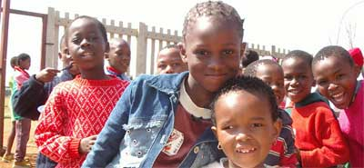
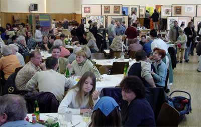

Was ist terre des hommes ?

tdh ist eine Abkürzung von terre des hommes was soviel heißt
wie "Erde
der Menschlichkeit". Tdh macht es sich zur Aufgabe, mit kleinen überschaubaren
Projekten Kindern überall auf der Welt zu ihren elementaren Menschenrechten
zu verhelfen. Das geschieht ohne Rücksicht auf Religion, Rasse, politische
Zugehörigkeit, Geschlecht und Herkunft. Dabei wird das soziale
Umfeld (Familie, Dorf etc.) in das Hilfsprokjekt mit einbezogen. In allen
Projekten ist "Hilfe zur Selbsthilfe" das
Idealziel. Projektschwerpunkte sind
- Verbesserung der Gesundheit
- Bekämpfung
von Armut
- Integration und Rehabilitation von Behinderten
- Flüchtlingshilfe
- Unterstützung von Kriegs-und AIDS-Waisen
- Kampf
gegen
- Kinderarbeit
- Kinderhandel
- Kindersoldaten
- sexuellen
Missbrauch von Kindern
- Maßnahmen zur Bildung und Ausbildung
- Resozialisierung von Straßenkindern
- und im Einzelfall Katastrophen-Soforthilfe
wie jüngst für die Flutopfer
in Südostasien.
Die Projekte werden von regionalen/lokalen Helfern
geleitet, wobei die Projekt-Koordinatoren von Tdh sich einmal jährlich
vor Ort über den Stand des Projektes informieren und dem Vorstand
und den Arbeitsgruppen darüber Rechenschaft abgeben. Tdh Deutschland
erhält
seit Jahren das Siegel des Deutschen Zentralinstituts. Damit wird ein effizienter
Umgang mit Spendengeldern bestätigt, so dass von 1 Euro Spende mehr als
90 Cent im Projekt ankommen. Das ist nur durch eine hohe Zahl ehrenamtlicher
Mitarbeiter erreichbar, weil dadurch die Verwaltungskosten äußerst
niedrig gehalten werden. Tdh arbeitet basisdemokratisch, das heißt,
der Vorstand handelt im Auftrag der Mitglieder/AGs, welche durch jährliche
Regionalkonferenzen und Mitgliederversammlungen mitbestimmen und mitentscheiden.
Links zum Thema:
Unsere tdh-Arbeitsgruppe im Murgtal

Eine tdh-Arbeitsgruppe besteht aus Personen, die sich ehrenamtlich im Sinne
von Tdh engagieren und durch verschiedenste Aktivitäten und Aktionen
die Öffentlichkeit für
die Probleme der Einen Welt sensibilisieren und durch Aktionserlöse die finanzielle
Grundlage der Arbeit schaffen.
Tdh Murgtal / Mittelbaden ist eine seit 27 Jahren bestehende Initiative von Bürgerinnen
und Bürgern, die recht erfolgreich durch verschiedenste Aktivitäten Öffentlichkeitsarbeit
leisten Spendenerlöse erzielen. Fest etabliert sind folgende Aktionen:
- die Radbörse (Frühjahr)
- eine Konzertveranstaltung (Neues Rathaus)
- das Kinderfest (Herbst)
- der Basar (November)
Hier geht's zum Komplettüberblick unserer Aktivitäten (Berichte und Fotos
seit 2001)
Durch jahrelanges Engagement haben wir eine großen Zahl von Sponsoren, die verlässlich das finanzielle Risiko der Veranstaltungen abfedern.
Wer bei uns mitarbeiten möchte, muss keine Angst vor Engagement haben.
Es gibt vielfältige Möglichkeiten, unsere Arbeit zu unterstützen
und jeder bestimmt selbst das Maß seiner Mitarbeit. Möglichkeiten
der Mitarbeit sind:
- Öffentlichkeitsarbeit und Werbung (z.B. Internet-Redaktion)
- neue Anregungen und Ideen für Aktionen
- Ab-und Aufbau
- Standdienste
- Kuchen-und Salatspenden
- neue Sponsoren gewinnen / Firmenkontakte
- bei
der Bewirtung aushelfen
und und und.....
Auch kleine oder sporadische Mithilfe schätzen wir sehr. Schreiben
Sie uns einfach eine E-Mail oder rufen Sie einen unserer Mitarbeiter an.
Links zum Thema:
| 


;)